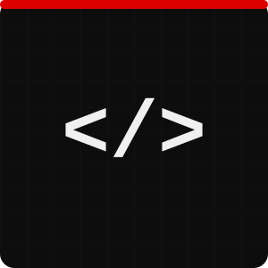

Hi, my name is
I'm a Telematics Engineer and Data Systematization Technologist from Universidad Distrital Francisco José de Caldas. I build web and mobile applications with a focus on performance, clean code, and great developer experience.

I love software development and strive to learn something new every day. I develop web and mobile applications using Go, JavaScript, Java, Python, and Groovy, with experience in PostgreSQL, MySQL, SQL Server, and Oracle.
My main stack is Go, where I work with frameworks like Gin, Echo, Fiber, and Chi, along with GORM, grpc-go, and Cobra. I also have experience with Node.js, Django, and Flask. I'm comfortable across macOS, Linux, and Windows, and proficient with Git, AWS, GCP, Docker, and Kubernetes.
When I'm not coding, you'll find me exploring new technologies, contributing to open-source, or looking for the next interesting engineering challenge to solve.
When I step away from the terminal, you'll find me deep in a race weekend. I'm a passionate Formula 1 fan and a proud Scuderia Ferrari supporter — the same obsession with precision engineering, split-second decisions, and relentless performance that drives the sport is what drives me as a developer.
From the raw speed at Monza to the strategy battles in Monaco, F1 is the perfect reminder that excellence lives in the details — and that going full throttle beats playing it safe.
Forza Ferrari. ■
05. What's next?
Whether you have a project in mind, a question, or just want to say hi — my inbox is always open. I'll do my best to get back to you!
Send a message